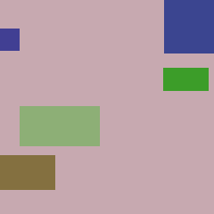

<body class="app-body theme-default layout-single-column"> <div class="app-holder" data-props='{"locale":"en"}' id="mastodon"> <div class="ui"> <div class="columns-area__panels"> <div class="columns-area__panels__main"> <div aria-label="Home" class="column" role="region"> <div class="column-header__wrapper"> <h1 class="column-header"><button class="column-header__title" type="button"><svg aria-hidden="true" class="icon icon-home" fill="currentColor" height="18" viewbox="0 -960 960 960" width="18"></svg>Home</button><div class="column-header__buttons"><button aria-label="Show settings" class="column-header__button" type="button"><svg aria-hidden="true" class="icon icon-tune" fill="currentColor" height="18" viewbox="0 -960 960 960" width="18"></svg></button></div></h1> </div> <div class="scrollable" role="feed"> <div class="item-list"><article class="status__wrapper km3uqq" data-id="113646326907750753"> <div class="status status-public" data-id="113646326907750753"><div class="status__action-bar llalfx"><button aria-label="Favorite" class="status__action-bar__button star-icon icon-button icon-button--with-counter km3uqq" type="button"><svg aria-hidden="true" class="icon icon-star" fill="currentColor" height="18" viewbox="0 -960 960 960" width="18"></svg><span class="icon-button__counter"><span class="animated-number">0</span></span></button><button aria-label="Reply" class="status__action-bar__button icon-button icon-button--with-counter hon2ev" type="button"><svg aria-hidden="true" class="icon icon-reply" fill="currentColor" height="18" viewbox="0 -960 960 960" width="18"></svg><span class="icon-button__counter"><span class="animated-number">1</span></span></button><div class="status__action-bar__spacer lzzncx"></div><button aria-label="Boost" class="status__action-bar__button icon-button icon-button--with-counter wcaihu" type="button"><svg aria-hidden="true" class="icon icon-boost" fill="currentColor" height="18" viewbox="0 -960 960 960" width="18"></svg><span class="icon-button__counter"><span class="animated-number">78</span></span></button><button aria-label="More" class="status__action-bar__button status__action-bar__dropdown icon-button ikunox" type="button"><svg aria-hidden="true" class="icon icon-more" fill="currentColor" height="18" viewbox="0 -960 960 960" width="18"></svg></button><button aria-label="Bookmark" class="status__action-bar__button status__action-bar__bookmark bookmark-icon icon-button llalfx" type="button"><svg aria-hidden="true" class="icon icon-bookmark" fill="currentColor" height="18" viewbox="0 -960 960 960" width="18"></svg></button></div><button class="status__content__read-more-button km3uqq" type="button">Read more<svg aria-hidden="true" class="icon icon-chevron" fill="currentColor" height="18" viewbox="0 -960 960 960" width="18"></svg></button><div class="status__content status__content--with-action wcaihu" lang="en"><div class="status__content__text status__content__text--visible translate"><p>Finally finished repotting 21 tomato seedlings on the bike co-op. If anyone has a good ramen recipe that does not need a stand mixer, please share. Volunteering at the makerspace this Saturday, come say hi if you are</p></div></div><div class="status__info hon2ev"><a class="status__relative-time wcaihu" href="https://toot.cafe/@freyareads/113646326907750753"><span class="status__visibility-icon"><svg aria-hidden="true" class="icon icon-globe" fill="currentColor" height="18" viewbox="0 -960 960 960" width="18"></svg></span><time>59m</time></a><a class="status__display-name hon2ev" href="https://toot.cafe/@freyareads"><span class="display-name wcaihu"><span class="display-name__account wcaihu">@freyareads@toot.cafe</span><bdi class="hon2ev"><strong class="display-name__html">Freya Kowalski</strong></bdi></span><div class="status__avatar hon2ev"><div class="account__avatar"></div></div></a></div></div> </article><article class="status__wrapper llalfx" data-id="754521974700274860"> <div class="status status-public" data-id="754521974700274860"><div class="status__info hon2ev"><a class="status__relative-time wcaihu" href="https://ruby.social/@zsantos_art/754521974700274860"><span class="status__visibility-icon"><svg aria-hidden="true" class="icon icon-globe" fill="currentColor" height="18" viewbox="0 -960 960 960" width="18"></svg></span><time>1h</time></a><a class="status__display-name hon2ev" href="https://ruby.social/@zsantos_art"><span class="display-name wcaihu"><span class="display-name__account wcaihu">@zsantos_art@ruby.social</span><bdi class="hon2ev"><strong class="display-name__html">Zoe 📷</strong></bdi></span><div class="status__avatar hon2ev"><div class="account__avatar"></div></div></a></div><div class="status__action-bar llalfx"><button aria-label="Reply" class="status__action-bar__button icon-button icon-button--with-counter hon2ev" type="button"><svg aria-hidden="true" class="icon icon-reply" fill="currentColor" height="18" viewbox="0 -960 960 960" width="18"></svg><span class="icon-button__counter"><span class="animated-number">2</span></span></button><div class="status__action-bar__spacer lzzncx"></div><button aria-label="Favorite" class="status__action-bar__button star-icon icon-button icon-button--with-counter km3uqq" type="button"><svg aria-hidden="true" class="icon icon-star" fill="currentColor" height="18" viewbox="0 -960 960 960" width="18"></svg><span class="icon-button__counter"><span class="animated-number">3</span></span></button><button aria-label="Boost" class="status__action-bar__button icon-button icon-button--with-counter wcaihu" type="button"><svg aria-hidden="true" class="icon icon-boost" fill="currentColor" height="18" viewbox="0 -960 960 960" width="18"></svg><span class="icon-button__counter"><span class="animated-number">11</span></span></button><button aria-label="More" class="status__action-bar__button status__action-bar__dropdown icon-button ikunox" type="button"><svg aria-hidden="true" class="icon icon-more" fill="currentColor" height="18" viewbox="0 -960 960 960" width="18"></svg></button><button aria-label="Bookmark" class="status__action-bar__button status__action-bar__bookmark bookmark-icon icon-button llalfx" type="button"><svg aria-hidden="true" class="icon icon-bookmark" fill="currentColor" height="18" viewbox="0 -960 960 960" width="18"></svg></button></div><div class="status__content status__content--with-action km3uqq" lang="en"><div class="status__content__text status__content__text--visible translate"><p>Thinking about how much I enjoy slow mornings with pierogi and no notifications. Our neighbourhood mesh network now has 26 nodes running.</p></div></div><p class="status__content__spoiler wcaihu"><span class="status__content__spoiler-text">politics</span><button class="status__content__spoiler-link" type="button">Show less</button></p></div> </article><article class="status__wrapper lzzncx" data-id="124121380246426602"> <div class="status status-public" data-id="124121380246426602"><div class="status__action-bar km3uqq"><button aria-label="Favorite" class="status__action-bar__button star-icon icon-button icon-button--with-counter km3uqq" type="button"><svg aria-hidden="true" class="icon icon-star" fill="currentColor" height="18" viewbox="0 -960 960 960" width="18"></svg><span class="icon-button__counter"><span class="animated-number">4</span></span></button><button aria-label="Boost" class="status__action-bar__button icon-button icon-button--with-counter wcaihu" type="button"><svg aria-hidden="true" class="icon icon-boost" fill="currentColor" height="18" viewbox="0 -960 960 960" width="18"></svg><span class="icon-button__counter"><span class="animated-number">1</span></span></button><button aria-label="More" class="status__action-bar__button status__action-bar__dropdown icon-button ikunox" type="button"><svg aria-hidden="true" class="icon icon-more" fill="currentColor" height="18" viewbox="0 -960 960 960" width="18"></svg></button><button aria-label="Bookmark" class="status__action-bar__button status__action-bar__bookmark bookmark-icon icon-button llalfx" type="button"><svg aria-hidden="true" class="icon icon-bookmark" fill="currentColor" height="18" viewbox="0 -960 960 960" width="18"></svg></button><button aria-label="Reply" class="status__action-bar__button icon-button icon-button--with-counter hon2ev" type="button"><svg aria-hidden="true" class="icon icon-reply" fill="currentColor" height="18" viewbox="0 -960 960 960" width="18"></svg><span class="icon-button__counter"><span class="animated-number">4</span></span></button><div class="status__action-bar__spacer lzzncx"></div></div><div class="status__info hon2ev"><a class="status__relative-time wcaihu" href="https://infosec.exchange/@lucacodes/124121380246426602"><span class="status__visibility-icon"><svg aria-hidden="true" class="icon icon-globe" fill="currentColor" height="18" viewbox="0 -960 960 960" width="18"></svg></span><time>1h</time></a><a class="status__display-name hon2ev" href="https://infosec.exchange/@lucacodes"><span class="display-name wcaihu"><span class="display-name__account wcaihu">@lucacodes@infosec.exchange</span><bdi class="hon2ev"><strong class="display-name__html">Luca</strong></bdi></span><div class="status__avatar hon2ev"><div class="account__avatar"></div></div></a></div><div class="status__content status__content--with-action wcaihu" lang="en"><div class="status__content__text status__content__text--visible translate"><p>Spent the whole morning at the train station and saw 39 herons. Is it just me or did Debian get noticeably faster in the last release?</p></div></div></div> </article><article class="status__wrapper hon2ev" data-id="930356425404045850"> <div class="status status-public" data-id="930356425404045850"><div class="status__content status__content--with-action wcaihu" lang="en"><div class="status__content__text status__content__text--visible translate"><p>Started a reading log and I am already behind by 68 pages.</p></div></div><div class="media-gallery km3uqq"><div class="media-gallery__item"><a class="media-gallery__item-thumbnail" href="#"></a></div></div><div class="status__info hon2ev"><a class="status__relative-time wcaihu" href="https://scholar.social/@dmitri_art/930356425404045850"><span class="status__visibility-icon"><svg aria-hidden="true" class="icon icon-globe" fill="currentColor" height="18" viewbox="0 -960 960 960" width="18"></svg></span><time>35m</time></a><a class="status__display-name hon2ev" href="https://scholar.social/@dmitri_art"><span class="display-name wcaihu"><span class="display-name__account wcaihu">@dmitri_art@scholar.social</span><bdi class="hon2ev"><strong class="display-name__html">Dmitri Rossi</strong></bdi></span><div class="status__avatar hon2ev"><div class="account__avatar"></div></div></a></div><div class="status__action-bar llalfx"><button aria-label="Boost" class="status__action-bar__button icon-button icon-button--with-counter wcaihu" type="button"><svg aria-hidden="true" class="icon icon-boost" fill="currentColor" height="18" viewbox="0 -960 960 960" width="18"></svg><span class="icon-button__counter"><span class="animated-number">0</span></span></button><button aria-label="Favorite" class="status__action-bar__button star-icon icon-button icon-button--with-counter km3uqq" type="button"><svg aria-hidden="true" class="icon icon-star" fill="currentColor" height="18" viewbox="0 -960 960 960" width="18"></svg><span class="icon-button__counter"><span class="animated-number">85</span></span></button><div class="status__action-bar__spacer lzzncx"></div><button aria-label="Reply" class="status__action-bar__button icon-button icon-button--with-counter hon2ev" type="button"><svg aria-hidden="true" class="icon icon-reply" fill="currentColor" height="18" viewbox="0 -960 960 960" width="18"></svg><span class="icon-button__counter"><span class="animated-number">1</span></span></button><button aria-label="Bookmark" class="status__action-bar__button status__action-bar__bookmark bookmark-icon icon-button llalfx" type="button"><svg aria-hidden="true" class="icon icon-bookmark" fill="currentColor" height="18" viewbox="0 -960 960 960" width="18"></svg></button><button aria-label="More" class="status__action-bar__button status__action-bar__dropdown icon-button ikunox" type="button"><svg aria-hidden="true" class="icon icon-more" fill="currentColor" height="18" viewbox="0 -960 960 960" width="18"></svg></button></div></div> </article><article class="status__wrapper wcaihu" data-id="144884366218441550"> <div class="status status-public" data-id="144884366218441550"><div class="status__action-bar llalfx"><button aria-label="Reply" class="status__action-bar__button icon-button icon-button--with-counter hon2ev" type="button"><svg aria-hidden="true" class="icon icon-reply" fill="currentColor" height="18" viewbox="0 -960 960 960" width="18"></svg><span class="icon-button__counter"><span class="animated-number">3</span></span></button><button aria-label="Favorite" class="status__action-bar__button star-icon icon-button icon-button--with-counter km3uqq" type="button"><svg aria-hidden="true" class="icon icon-star" fill="currentColor" height="18" viewbox="0 -960 960 960" width="18"></svg><span class="icon-button__counter"><span class="animated-number">1</span></span></button><button aria-label="Boost" class="status__action-bar__button icon-button icon-button--with-counter wcaihu" type="button"><svg aria-hidden="true" class="icon icon-boost" fill="currentColor" height="18" viewbox="0 -960 960 960" width="18"></svg><span class="icon-button__counter"><span class="animated-number">0</span></span></button><button aria-label="More" class="status__action-bar__button status__action-bar__dropdown icon-button ikunox" type="button"><svg aria-hidden="true" class="icon icon-more" fill="currentColor" height="18" viewbox="0 -960 960 960" width="18"></svg></button><div class="status__action-bar__spacer lzzncx"></div><button aria-label="Bookmark" class="status__action-bar__button status__action-bar__bookmark bookmark-icon icon-button llalfx" type="button"><svg aria-hidden="true" class="icon icon-bookmark" fill="currentColor" height="18" viewbox="0 -960 960 960" width="18"></svg></button></div><div class="status__info hon2ev"><a class="status__relative-time wcaihu" href="https://techhub.social/@rosa_art/144884366218441550"><span class="status__visibility-icon"><svg aria-hidden="true" class="icon icon-globe" fill="currentColor" height="18" viewbox="0 -960 960 960" width="18"></svg></span><time>51m</time></a><a class="status__display-name hon2ev" href="https://techhub.social/@rosa_art"><span class="display-name wcaihu"><span class="display-name__account wcaihu">@rosa_art@techhub.social</span><bdi class="hon2ev"><strong class="display-name__html">Rosa Novak ☕</strong></bdi></span><div class="status__avatar hon2ev"><div class="account__avatar"></div></div></a></div><div class="status__content status__content--with-action wcaihu" lang="en"><div class="status__content__text status__content__text--visible translate"><p>Wrote up my notes: <a href="https://fieldnotes.blog/notes/6744" rel="nofollow noopener" target="_blank">https://fieldnotes.blog/notes/6744</a> Third attempt at lentil stew today and it actually worked.</p></div></div><a class="status-card km3uqq" href="https://fieldnotes.blog/notes/6744" rel="noopener" target="_blank"><div class="status-card__image"></div><div class="status-card__content"><span class="status-card__host"><span lang="en">fieldnotes.blog</span></span><strong class="status-card__title">The case for boring technology in 2026</strong><span class="status-card__description">Short read, about five minutes.</span></div></a></div> </article></div> </div> </div> </div> <div class="columns-area__panels__pane columns-area__panels__pane--navigational"> <div class="navigation-panel"> <div class="navigation-panel__logo"><span class="logo-mark">m</span><span>mastodon</span></div> <input aria-label="Search" class="search__input" placeholder="Search or paste URL" style="" type="text"/> <a class="column-link column-link--transparent column-link--active" href="#"><svg aria-hidden="true" class="icon icon-home" fill="currentColor" height="18" viewbox="0 -960 960 960" width="18"></svg><span>Home</span></a> <a class="column-link column-link--transparent" href="#"><svg aria-hidden="true" class="icon icon-explore" fill="currentColor" height="18" viewbox="0 -960 960 960" width="18"></svg><span>Explore</span></a> <a class="column-link column-link--transparent" href="#"><svg aria-hidden="true" class="icon icon-globe" fill="currentColor" height="18" viewbox="0 -960 960 960" width="18"></svg><span>Live feeds</span></a> <a class="column-link column-link--transparent" href="#"><svg aria-hidden="true" class="icon icon-bell" fill="currentColor" height="18" viewbox="0 -960 960 960" width="18"></svg><span>Notifications</span></a> <a class="column-link column-link--transparent" href="#"><svg aria-hidden="true" class="icon icon-mail" fill="currentColor" height="18" viewbox="0 -960 960 960" width="18"></svg><span>Private mentions</span></a> <a class="column-link column-link--transparent" href="#"><svg aria-hidden="true" class="icon icon-bookmark" fill="currentColor" height="18" viewbox="0 -960 960 960" width="18"></svg><span>Bookmarks</span></a> <a class="column-link column-link--transparent" href="#"><svg aria-hidden="true" class="icon icon-star" fill="currentColor" height="18" viewbox="0 -960 960 960" width="18"></svg><span>Favorites</span></a> <a class="column-link column-link--transparent" href="#"><svg aria-hidden="true" class="icon icon-list" fill="currentColor" height="18" viewbox="0 -960 960 960" width="18"></svg><span>Lists</span></a> <hr/> <a class="column-link column-link--transparent" href="#"><svg aria-hidden="true" class="icon icon-gear" fill="currentColor" height="18" viewbox="0 -960 960 960" width="18"></svg><span>Preferences</span></a> <a class="navigation-panel__compose" href="#">New post</a> </div> </div> </div> </div> </div> </body>